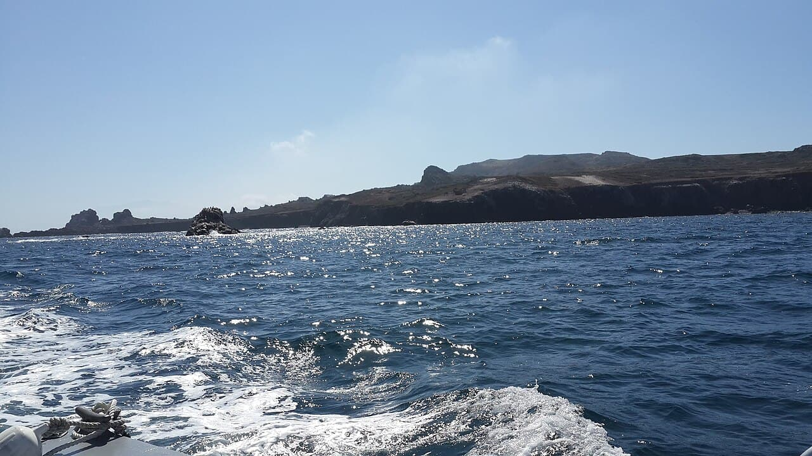

Todos Santos — Killers
Basse-Californie, Mexique · surf

Un haut-fond au large d'une île déserte, où la houle du Pacifique nord se dresse en murs énormes. Spot de très grosses vagues, accessible seulement en bateau.
- Lieu
- Basse-Californie, Mexique
- Niveau
- Expert
- Activités
- surf
- Type d'eau
- Mer / océan
- Coordonnées
- 31.80, -116.80 (position approximative du secteur)
Dangers à connaître
- Vagues de grande taille : matériel et expérience spécifiques.
- Accès uniquement par bateau, à une heure de la côte.
- Aucun secours sur place.
Le conseil d'Ocean Buddy
Ce n'est pas un spot où l'on se teste. On y va accompagné, ou on regarde.
Ouvrir dans Ocean Buddy Télécharger sur l'App Store
Source : Description historique Ocean Buddy · vérification externe en attente.